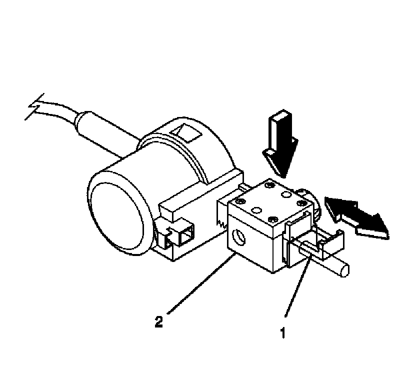

Shift Interlock Solenoid: Service and Repair
Automatic Transmission Shift Lock Actuator Replacement
Removal Procedure

1. Disable the SIR system. Refer to SIR Disabling and Enabling.
2. Remove the knee bolster.
3. Put the shift lever clevis into the neutral position.
4. Disconnect the electrical connector.
5. Using a small screwdriver, pry the automatic transmission shift lock control actuator away from the steering column jacket and the cable shift cam.
6. Remove the shift lock control actuator.
Installation Procedure
1. Firmly install the shift lock control actuator onto the steering column jacket and the cable shift cam.
2. Connect the electrical connector.

3. Adjust the shift lock control actuator (with the shift lever clevis in the neutral position) in the following way:
1. Pull out the tab (1) on the adjuster block side (2) of the shift lock control actuator.
2. Press on the adjuster block (2) to compress the internal adjuster spring which disengages the adjuster teeth. Slide the adjuster block (2) as far away from the actuator as possible.
3. Lock the adjuster block (2) in place by pushing in on the tab (1).
4. Inspect the shift lock control actuator for the following items:
1. The shift lock control actuator must lock the shift lever clevis when the shift lever clevis is put into the park position.
2. Depress the brake pedal to move the shift lever out of the park position.
3. The actuator will be energized.
4. Readjust the shift lock control actuator if needed.
5. Install the knee bolster.
6. Enable the SIR system. Refer to SIR Disabling and Enabling.